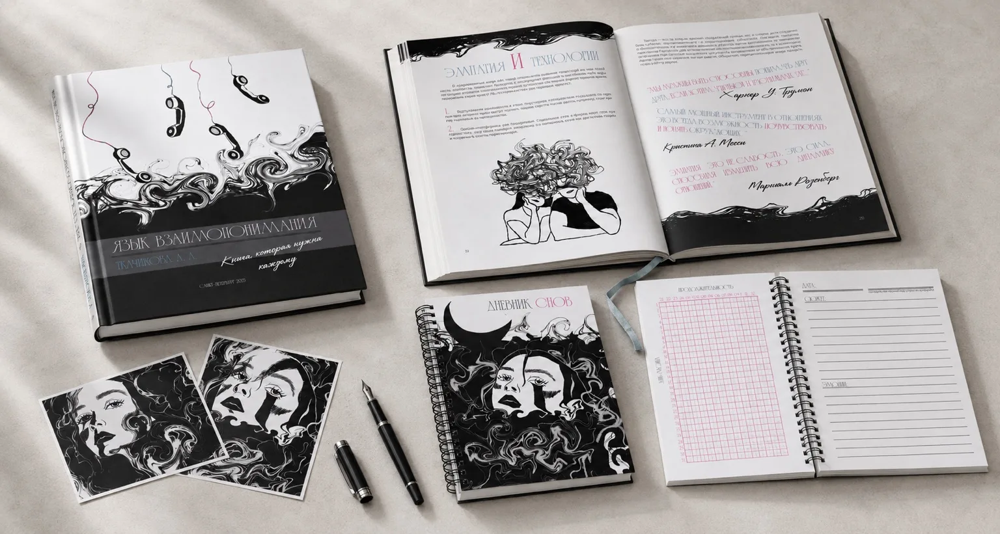
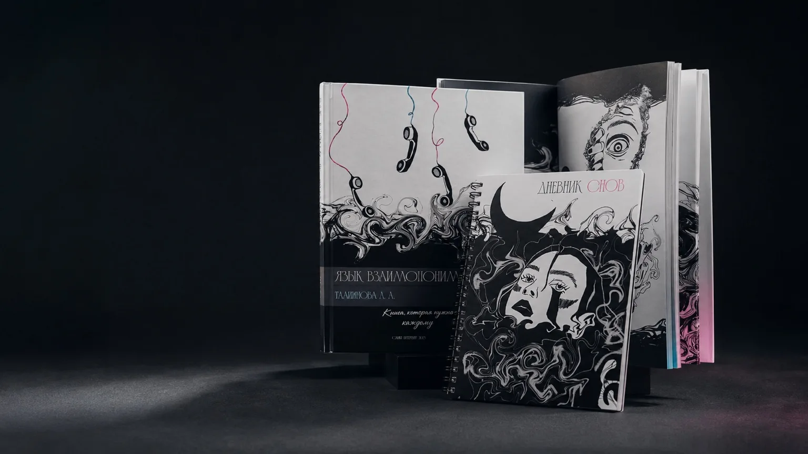
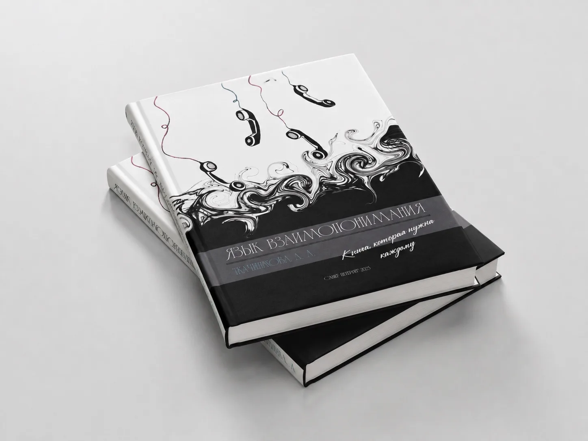
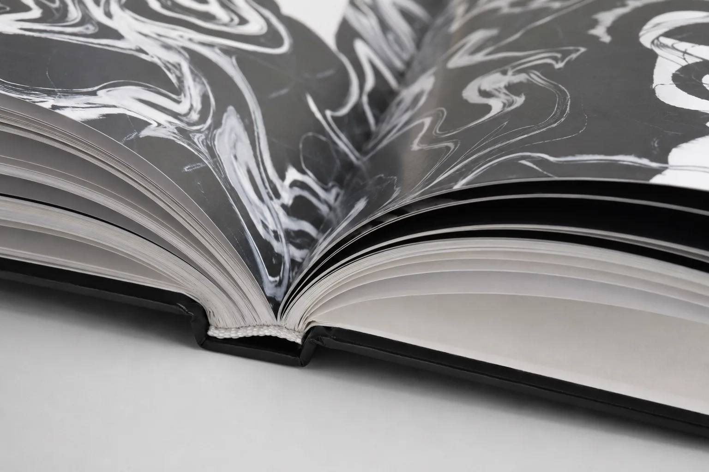
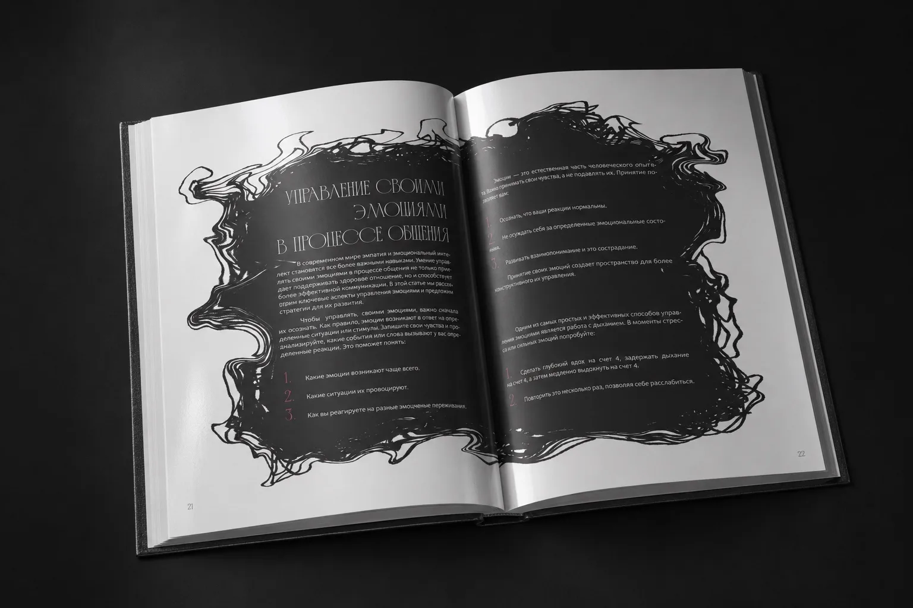
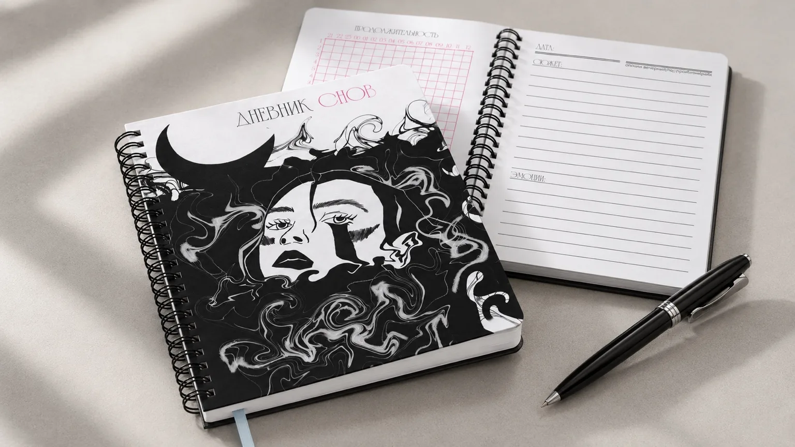
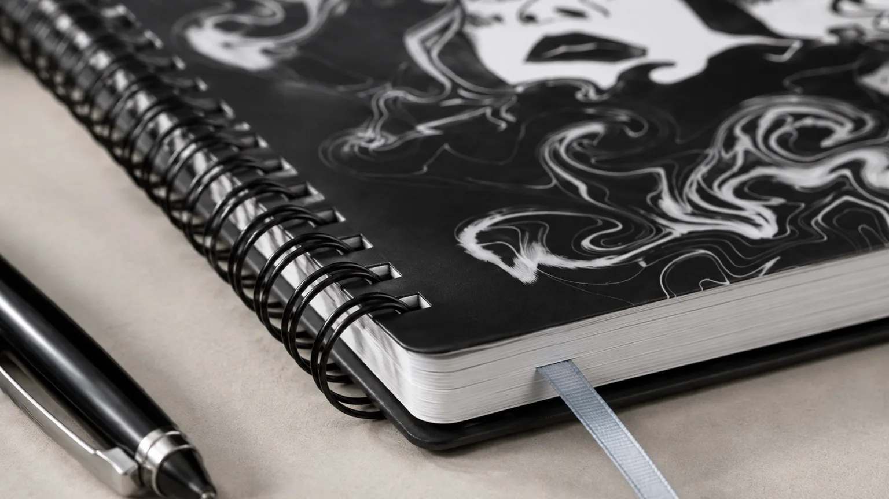
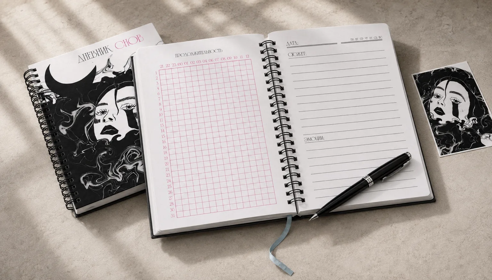

Два формата
Книга организует материал о коммуникации. Дневник меняет способ взаимодействия: читатель заполняет страницы сам.
Редакционный дизайн · иллюстрация
Учебный редакционный проект: книга об общении и дневник для личных наблюдений.

Контекст
Выстроить иерархию в книге о коммуникации и связать её с более личным форматом дневника. Сохранить узнаваемый характер двух изданий.
Основная книга посвящена пониманию других людей, дневник — наблюдению за собственным опытом. Чёрно-белая пластичная графика объединяет серию, а цветовые акценты разделяют информационные уровни.
Концепция серии, обложки, иллюстрации, оформление разворотов и страниц для записей.
Книга организует материал о коммуникации. Дневник меняет способ взаимодействия: читатель заполняет страницы сам.
Иллюстрации, светлые и тёмные поля чередуются с текстом. Розовый и голубой используются для отдельных акцентов.
Разлиновка и поля для записей поддерживают назначение дневника. Графика остаётся частью серии, но занимает меньше места.
Макеты и визуализации







Итог
Собраны обложки, иллюстративное оформление и примеры внутренних страниц двух изданий. Проект представлен в учебном формате.
Обсудить работу в команде ↗{kind=link}
{kind=link}
{kind=link}
{kind=link}
{kind=link}
{kind=link}
{kind=link}